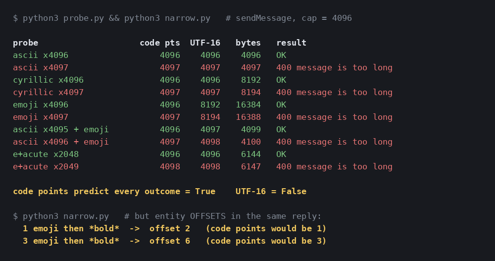

Telegram's 4096 Limit Isn't Characters: I Measured It
If you have ever asked how long a Telegram message can be, you have met the same answer twice: 4096 characters, and by the way Telegram counts UTF-16, so an emoji costs two. It is repeated in library issues, in Stack Overflow answers, and in the defensive splitters people paste into their bots, usually as a chunk size of 2000 or 4000 chosen with a shrug for safety.
I write a lot of bot code that emits long, emoji-heavy status blocks, and that folklore was costing me splits I did not think I needed. So I stopped guessing and asked the API directly: send messages one unit either side of the boundary, in four different alphabets, and see which measurement predicts what the server does.
The answer is that the number 4096 is real and exact, and that the unit almost everybody names is the wrong one. Worse, the UTF-16 rule is true, of a different field, in the same reply. A single Message object mixes two units, which is precisely why the folklore has survived so long: everyone is half right.

How I tested it
The probe builds strings out of four deliberately different characters and sends each through sendMessage against a real bot token (a throwaway bot, never one serving users), recording the HTTP status and the exact description Telegram returns. Every message it manages to send is deleted with deleteMessage in the same breath, so the run leaves nothing behind in the chat.
The four characters are chosen so that the candidate units disagree with each other:
a— 1 code point, 1 UTF-16 unit, 1 byte. All three units agree, so this only finds the number.я— 1 code point, 1 UTF-16 unit, 2 bytes. Separates bytes from the rest.- 😀 (U+1F600) — 1 code point, 2 UTF-16 units, 4 bytes. Separates code points from UTF-16.
e+ combining acute (U+0301) — 2 code points, 2 UTF-16 units, 3 bytes, and one thing you can see. Separates all of them from "visible characters".
Then the only discipline that matters: test the unit immediately either side of every candidate boundary. A limit you have bracketed to the nearest hundred is a limit you have not found.
The number is 4096. The unit is code points.
ASCII gives the number straight away. 4,096 characters go through; 4,097 come back as a clean 400 Bad Request: message is too long. No truncation, no silent trim — a real error you can catch.
Cyrillic kills the bytes hypothesis. 4,096 Cyrillic characters are 8,192 bytes of UTF-8, twice the ASCII payload, and Telegram accepts them; 4,097 fails. So whatever is being counted, it is not the size of what goes on the wire.
The emoji case is the one that surprised me. If the cap counted UTF-16 code units, 2,049 emoji — 4,098 units — would be rejected. It was accepted. So I pushed until it broke, and the boundary sits exactly where a code-point counter would put it:
emoji x4096 code pts 4096 UTF-16 8192 bytes 16384 -> OK
emoji x4097 code pts 4097 UTF-16 8194 bytes 16388 -> 400 message is too longRead that again, because it is the whole post. A single Telegram message can carry 4,096 emoji, 16 KB of UTF-8 and 8,192 UTF-16 code units, and the server takes it. I echoed the accepted message back out of the API response and compared it to what I sent: identical, character for character. Nothing was truncated on the way through.
The mixed case pins it from the other side. a × 4,095 followed by one emoji is 4,096 code points and 4,097 UTF-16 units: accepted. Add one more a and it is 4,097 code points: rejected. Across every probe I ran, "code points ≤ 4096" predicted the outcome every single time. "UTF-16 units ≤ 4096" did not.
But the UTF-16 rule is real — for offsets
Here is why the folklore refuses to die. In the same JSON reply that just accepted 8,192 UTF-16 units, the formatting entities are indexed in UTF-16.
Send one emoji followed by bold text and read the entity Telegram hands back:
😀*bold* -> {"offset": 2, "length": 4, "type": "bold"}
😀😀😀*bold* -> {"offset": 6, "length": 4, "type": "bold"}One emoji, and the bold run starts at offset 2. Three emoji, offset 6. If offsets were code points those numbers would be 1 and 3. Telegram documents this (entity offsets are specified in UTF-16 code units) and it is correct, and it has been quietly transplanted onto the length cap by a thousand summarised answers.
So both halves of the folklore are true of something. They are just true of different fields:
| Field | Unit | Python equivalent |
|---|---|---|
| 4096 text cap / 1024 caption cap | Unicode code points | len(text) |
entities[].offset and .length | UTF-16 code units | len(text.encode('utf-16-le')) // 2 |
If you have ever sliced a message at an entity offset with plain Python indexing and watched the bold run land one character to the left for every emoji before it, that table is the bug.
Visible characters are not the unit either
The combining-mark probe closes the last escape route. e + U+0301 renders as a single é, but it is two code points. Send 2,048 of them, which is 2,048 things a human can see and 4,096 code points, and it is accepted. Send 2,049 and it fails at 4,098.
So a user can paste 2,049 visible characters into your bot and be told their message is too long, and they will be right and the error will also be right. If you show a live character counter in a Mini App, this is the case that makes it disagree with the server. Any counter built on grapheme clusters, or on String.length in JavaScript (which is UTF-16), will be wrong in one direction or the other for exactly these inputs.
Captions: same rule, different number, different error string
Captions cap at 1,024 and behave identically. 1,024 emoji, or 2,048 UTF-16 units, are accepted; 1,025 are rejected. Worth noting for log-grepping: the error text is not the same one sendMessage returns.
sendMessage -> 400 Bad Request: message is too long
sendPhoto -> 400 Bad Request: message caption is too longWhat this means in code
In Python, the naive guard is the correct guard. len(text) <= 4096 matched every outcome I measured. This is the rare case where the obvious thing is right and the clever thing, re-encoding to UTF-16 to "be safe", is what makes you wrong.
In JavaScript, the naive guard is the wrong one. str.length is UTF-16 code units, so an emoji reads as 2 and your Mini App will refuse a message the server would have accepted. Count code points instead: [...str].length, which iterates by code point and gives 1 per emoji.
Stop halving your chunk size for emoji. If you split long output at 2,000 "to be safe with unicode", you are sending twice the messages you need to, at twice the flood-limit risk, for a hazard that does not exist. Split at 4,096 code points.
Never index a string by an entity offset directly. Convert first: encode to utf-16-le, slice by offset * 2 and length * 2, decode back. Anything else is correct only until someone types an emoji.
Building on Telegram for something lighter?
My free planner lays out a Telegram game night — rounds, timings, poll structure — in about a minute, no signup.
Build a game night → Or read how to run one end to end.What I did not test
Three honest gaps. I did not test whether the same code-point rule holds on the MTProto client APIs — TDLib and the user-account layer are a different code path where the UTF-16 convention is far more visible, so I would not assume my result transfers. I did not test editMessageText, only sendMessage and sendPhoto; I would expect the same cap but I have not seen it. And I did not probe the entity-count limit, which is a separate ceiling that bites long formatted messages before the length cap does.
Everything here comes from one bot on one network path. I am comfortable with that for this particular claim, because the result is not a statistical trend — it is a boundary that lands on an exact power of two from four directions at once, with a one-unit failure on the far side of each. Encoding a message differently changed its byte length fourfold and moved the boundary not at all.
The short version
- The cap is 4,096 Unicode code points, exactly. 4,097 gives
400 message is too long. - Not bytes: 4,096 Cyrillic characters are 8,192 bytes and go through fine.
- Not UTF-16: 4,096 emoji are 8,192 UTF-16 units and 16 KB, and go through fine.
- Not visible characters: 2,049 combining-accent é's are 4,098 code points and are rejected.
- Entity offsets are UTF-16. Two units in one
Message. Convert before slicing. - Captions: same rule at 1,024, with a distinct error string.
Questions I had before I measured
- What unit is Telegram's 4096 message limit counted in?
- Unicode code points. Measured against a live bot, 4,096 code points is accepted and 4,097 is rejected with 400 Bad Request: message is too long, regardless of how those code points encode. A message of 4,096 emoji is 8,192 UTF-16 code units and 16,384 bytes of UTF-8, and it sends without complaint.
- Does an emoji count as two characters in a Telegram message?
- Not against the length cap. A non-BMP emoji is one code point, and the cap counts code points, so it costs one. It does count as two in entity offsets, which are measured in UTF-16 code units. That is why the advice to budget two units per emoji is half right: it applies to formatting offsets, not to the 4096 limit.
- Is len(text) a correct check for the Telegram message limit in Python?
- Yes. Python's len returns the number of Unicode code points, which is exactly the unit the cap uses, so len(text) <= 4096 matched every measured outcome. Guards written against UTF-16 length or UTF-8 byte length both reject messages that Telegram accepts.
- Does the same rule apply to the 1024 caption limit?
- Yes. Captions cap at 1,024 code points and behave identically: 1,024 emoji is accepted at 2,048 UTF-16 units, and 1,025 is rejected with 400 Bad Request: message caption is too long. The error text differs from the sendMessage one, which is useful when you are reading logs.
Telegram in Production — the parts that bite you
The guards from this post, finished: a length check in the unit the server actually uses, an entity-offset slicer that survives emoji, and a splitter that stops halving your chunks for no reason. Plus the file-size guard that fails loudly instead of retrying forever, an initData validator with signature excluded and auth_date enforced, poll payloads Telegram will not silently rewrite, and a systemd unit linter for the two failure modes that cost me weeks. 55 tests you can run from the zip.
More from the Telegram build log
- Telegram bot file size limits: 20 MiB down, 50 MiB up, both exact to the byte — and the upload cap counts your HTTP headers.
- I forged Telegram initData: which payloads pass validation, and the field that broke every old validator.
- I tested Telegram's poll limits: twelve options, and one timer behaviour that closes your round early.